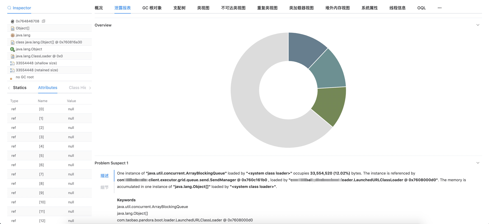
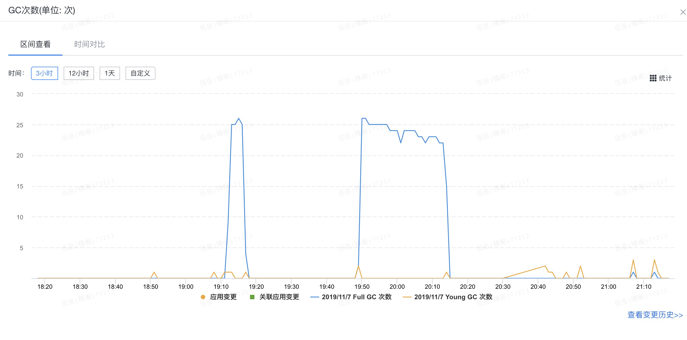
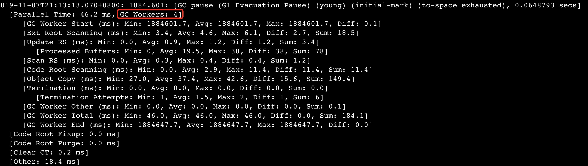

某线上应用在进行查询结果导出Excel时，大概率出现持续的FullGC。解决这个问题时，记录了一下整个的流程，也可以作为一般性的FullGC问题排查指导。
为了定位FullGC的原因，首先需要获取heap dump文件，看下发生FullGC时堆内存的分配情况，定位可能出现问题的地方。
可以在JVM参数中设置-XX:+ HeapDumpBeforeFullGC参数。
建议动态增加这个参数，直接在线上镜像中增加一方面是要重新打包发布，另一方面风险比较高
sudo -u admin /opt/taobao/java/bin/jinfo -flag +HeapDumpBeforeFullGC pid
sudo -u admin /opt/taobao/java/bin/jinfo -flag +HeapDumpAfterFullGC pid
也可以用HeapDumpOnOutOfMemoryError这个参数，只在outOfMemoryError发生时才dump。实测只有在fullgc完成时才会产生该文件，fullgc期间看不到。
此外还需要-XX:HeapDumpPath=/home/admin/logs/java.hprof这个参数来指定dump文件存放路径。
先获取java进程ID，再使用jmap进行dump。
注意，虚拟机上的jmap可能没有做路径映射，需要手动选择jdk路径下来执行
ps -aux | grep java
jmap -dump:file=test.hprof,format=b XXXXJDK7后新增的多功能命令，其中jcmd pid GC.heap_dump FILE_NAME的效果和jmap -dump:file=test.hprof,format=b pid一样。
可以生成本机或远程JVM的dump。还有一些其他工具就不详细介绍了。
由于使用的是阿里云的服务器，可以直接将dump文件上传到OSS上通过公司内部工具来分析，或通过OSS再下载到本地。
设置OSSCMD：
操作命令 osscmd config --host=oss-cn-hangzhou-am101.aliyuncs.com --id=** --key=**
创建bucke：osscmd cb 000001
上传文件：osscmd put 1.txt oss://000001/
下载文件：osscmd get oss://000001/1.txt 1.txt
其他类型的Linux主机可以使用SCP命令，参考：Linux scp命令
通过dump文件来分析fullGC的原因，需要关注哪些类占用内存空间较多、不可到达类等。
由于使用的是公司内部工具Zprofiler和grace，详细的使用过程这里就不截图了。一些其他可用的工具和命令(参考Java内存泄漏分析系列之六：JVM Heap Dump（堆转储文件）的生成和MAT的使用):
jhat <heap-dump-file>生成网页，通过浏览器访问http://localhost:7000查看需要注意的是，只看dump文件有时还不能得到结论，因为占用空间大头的有可能是String、ArrayBlockingList这样的对象，而且内容可能是null或null对象的集合，无从排查。此时还要结合发生fullgc前后业务系统发生了什么动作来确定。如果有条件的话可以在日常环境或预发环境重现一下。
当然，如果内存中的空间消耗对象是特殊的类，就比较好排查了。
具体情况具体分析。
查询DB中数据->在异步线程中通过poi转换成Excel->上传到OSS。
示例代码：
// 导出代码中将变量直接作为lambda表达式的值传入
List<XXData> data = queryData(request);
SheetDownloadProperty property = sheetDownloadProperties.get(0);
property.setTotalCount(request.getQueryRequest().getPageSize());
property.setPageSize(request.getQueryRequest().getPageSize());
property.setQueryFunction((currentPage, pageSize) -> data);
// 该组件会在线程池异步调用poi组件转换为excel、上传OSS、下载
asyncDownloadService.downloadFile(downloadTask);private List<XXData> queryData(ExportRequest request) {
//查询DB，略
}// 查询方法
@FunctionalInterface
public interface PageFunction<T> {
/**
* 方法执行
*/
List<T> apply(Integer currentPage,Integer pageSize);
}通过内部工具可见，fullGC前有三个占据内存较高的ArrayBlockingList，里面有大量的内容为null的Object。

这三个ArrayBlockingList所属的中间件，虽然本身和业务流程没有关系，但是仍不能排除嫌疑。
由于依赖了二方库poi，这个库的usermodel模式很容易引起fullGC，同时也怀疑是因为lambda表达式直接传了变量。
把poi的usermodel改为事件模式（https://my.oschina.net/OutOfMemory/blog/1068972）可以避免这个问题。
但是该功能是一个二次封装的三方包中的，同时其他引用该组件的应用fullgc频率并不高，没有采用这个方案。
持有大量null对象的中间件版本较低，且新版目前已不再维护，老版本的releas note虽然没有提到这条bug fix，有一定嫌疑。
该中间件初始化时会创建三个容量为810241024的ArrayBlockingList，和dump文件相符合。
同样是因为这个中间件是在三方包中封装，不方便直接该版本，同样没有采用这个方案。
可以调整metaspace参数来实现，本次想找到代码中相关的线索来解决，未采用该方案。
仔细观察了这段代码在其他系统的的实现，发现其他系统的lambda表达式是匿名方法，而不是直接传值，即：
property.setQueryFunction((currentPage, pageSize) -> {
// 查询逻辑, 略
);
怀疑是直接传变量进去导致的垃圾回收问题。更改到这种模式后，触发下载功能时，连续长时间的fullGC仍然时有发生，没有解决问题。
暂时能确定的原因是，公司中间件本身占用堆内存较多，运行poi增加了GC的频率。但是由于它们都在二方库的原因，不方便修改。
此时搜索到stackoverflow有关于poi反复GC的一个问题，和我的情况类似，也是反复GC但是仍然不能释放内存。有回复建议将GC回收器替换为G1GC，将默认的UseConcMarkSweepGC替换后效果明显，一次FullGC就可以完成回收释放，不会反复FullGC，如下图，20:30前的fullGC是CMS，持续时间长且反复进行；20:30后是替换后第一次触发excel转换下载，进行了多次下载，即使发生FullGC也只有1次，大大缓解了之前的问题：

本次暂定只采用方案5。
G1GC在JDK9已替代CMS成为了正式的垃圾回收器，低版本JDK需要手动设置。具体需要设置的JVM参数：
-Xms32m
-Xmx1g
-XX:+UnlockExperimentalVMOptions
-XX:+UseG1GC
-XX:MaxHeapFreeRatio=15
-XX:MinHeapFreeRatio=5注意前两行一般应用都会设置，不要覆盖掉。最后两行需要视情况调整。另外，默认的-XX:+UseConcMarkSweepGC需要去掉。
使用G1GC时需要确认工作线程数是否和预期一致，不要太多，一般来说和CPU核数一致即可。出现非预期数目的原因可能是，镜像脚本指定核数时，直接按照物理机而不是虚拟机核数来生成。
查看方式是看gc日志：

虚拟机设置核数的dokcker脚本示例：
export CPU_COUNT="$(grep -c 'cpu[0-9][0-9]*' /proc/stat)"core dump是针对线程某一时刻的运行情况的，可以看到执行到哪个类哪个方法哪一行以及执行栈的；heap dump是针对内存某一时刻的分配情况的。
简单摘译了一些，可以直接看原文。
关于G1GC，会在后续文章中研究。